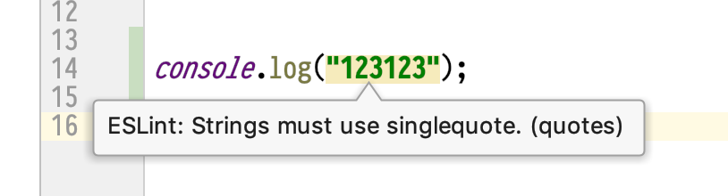

UI tests.
Hyperavtomatization
üçÑüçÑüçÑüçÑüçÑ
Aleksei Zolotykh.
Team leader of team Sputnik
Audit logs
Settings
API Keys

As a result...
The driver wasn't paying
the required attention
while allowing his Tesla to drive him.
Tesla’s Autopilot found partly to blame for 2018 crash on the 405
Finding the benefits
Why am I so excited about every self driving car case in court? Because the sooner humanity learns to solve the legal problems of self-driving cars, the sooner these cars will be on our streets.
üí©üí©üí© better than üí©
CI/CD
Continuous Integration / Continuous Delivery
CI/CD
Continuous Integration / Continuous Delivery
Automation
The faster the feedback, the better.Hyperavtomatization
The sooner the Pipeline falls down, the better.Type system

Linters



When can we detect a bug?
Code review
from 1 hour to 1 day
Sometimes we may MISS something
Autotests

Our customers can do it for us
üòà
In JSX
...
<ul className="tab">
<li>Login</li>
<li>SignUp</li>
</ul>
...
In JSX
...
<ul className="tab">
<li>{ i18n('Login')}</li>
<li>{ i18n('SignUp')}</li>
</ul>
...
Eslint.
JSXText: (node) => {
context.report({
node,
message: 'Text "{{value}}" should be localized',
data: { value: node.value },
});
}
eslint --fix
JSXText: (node) => {
context.report({
...
fix: fixer => fixer.replaceText(node, fixI18n(value)),
...
});
}
describe('test', () => {
test('should works', () => {
...
});
});
ts - .eslintrc.js
module.exports = {
parser: "@typescript-eslint/parser",
plugins: ["@typescript-eslint"],
parserOptions: {
ecmaVersion: 2019,
sourceType: "module",
ecmaFeatures: { jsx: true },
},
settings: {
react: {
version: "detect"
}
}
};
Name of the booleans
let completed: boolean; // ⛔️
let hasCompleted: boolean;
"acorn": "^6.1.1",
"bunyan": "^1.8.12",
"classnames": "2.2.6",
"debounce-promise": "^3.1.2",
"express": "^4.16.4",
"gelf-stream": "^1.1.1",
"google-libphonenumber": "^3.2.2",
"ib-client-util": "^1.1.2",
"ib-date-time-pickers": "^7.0.0",
"ib-i18n": "^7.0.7",
"ib-loader": "^5.1.0",
"ib-modals": "6.2.3-ts-beta",
"ib-rest-client": "^2.0.0",
"ib-select": "^7.1.0",
"infobip-bootstrap": "~0.2.0",
"infobip-common-express": "^16.4.2",
"jade": "^1.11.0",
"lodash": "^4.17.14",
"loglevel": "^1.6.1",
"moment": "^2.24.0",
"moment-timezone": "^0.5.23",
"nconf": "^0.10.0",
"react": "^16.8.6",
"react-copy-to-clipboard": "^5.0.1",
"react-dom": "^16.8.6",
"react-input-autosize": "2.1.0",
"react-moment": "^0.8.4",
"react-redux": "^5.1.1",
"react-toastify": "^5.3.2",
"react-tooltip": "^3.10.0",
"redux": "^4.0.0",
"redux-form": "^7.4.2",
"redux-starter-kit": "^0.6.3",
"redux-thunk": "^2.3.0",
"reselect": "^4.0.0",
"url-polyfill": "^1.1.5",
"utility-types": "^3.4.1",
"validate.js": "^0.13.1"
"@babel/core": "^7.3.3",
"@babel/preset-env": "^7.3.1",
"@babel/preset-react": "^7.0.0",
"@babel/runtime": "^7.3.1",
"@types/chai": "^4.1.7",
"@types/enzyme": "^3.9.1",
"@types/google-libphonenumber": "^7.4.17",
"@types/invariant": "^2.2.29",
"@types/jest": "^24.0.12",
"@types/lodash": "^4.14.121",
"@types/loglevel": "^1.5.4",
"@types/node": "^11.9.5",
"@types/react": "^16.8.4",
"@types/react-dom": "^16.8.2",
"@types/react-redux": "^7.0.9",
"@types/react-tooltip": "^3.9.0",
"@types/redux-form": "^8.1.1",
"@typescript-eslint/eslint-plugin": "^1.11.0",
"@typescript-eslint/parser": "^1.11.0",
"awesome-typescript-loader": "^5.2.1",
"babel-core": "^6.26.3",
"babel-loader": "^8.0.5",
"browserslist": "^4.4.2",
"cache-loader": "^2.0.1",
"chai": "^4.2.0",
"clean-webpack-plugin": "^1.0.1",
"core-js": "^2.6.9",
"cross-env": "^5.2.0",
"css-loader": "^2.1.0",
"enzyme": "^3.10.0",
"enzyme-adapter-react-16": "^1.12.1",
"eslint": "^6.0.1",
"eslint-config-infobip": "~2.0.0",
"eslint-plugin-localization": "file:../eslint-plugin-localization",
"eslint-plugin-react": "^7.14.3",
"eslint-plugin-typescript": "^0.14.0",
"file-loader": "^3.0.1",
"husky": "^3.0.1",
"identity-obj-proxy": "^3.0.0",
"image-webpack-loader": "^5.0.0",
"infobip-i18n-importer-webpack-plugin": "^0.3.4",
"infobip-webpack-helper": "0.1.0",
"jest": "^24.8.0",
"jest-canvas-mock": "^2.1.0",
"jest-enzyme": "^7.0.2",
"jest-junit": "^6.3.0",
"jest-resolve": "^24.7.1",
"less-loader": "^5.0.0",
"lint-staged": "^9.2.1",
"mini-css-extract-plugin": "^0.5.0",
"node-sass": "4.10.0",
"nodemon": "^1.18.10",
"optimize-css-assets-webpack-plugin": "^5.0.1",
"prettier": "^1.16.4",
"prop-types": "^15.7.2",
"react-test-renderer": "^15.6.2",
"redux-devtools-extension": "^2.13.8",
"resolve-url-loader": "^2.3.2",
"sass-loader": "^7.1.0",
"speed-measure-webpack-plugin": "^1.3.0",
"style-loader": "^0.23.1",
"ts-jest": "^24.0.2",
"ts-node": "^7.0.1",
"tslint": "^5.2.0",
"tslint-react": "^3.0.0",
"typescript": "^3.5.0",
"url-loader": "^1.1.2",
"webpack": "^4.29.5",
"webpack-bundle-analyzer": "^3.0.4",
"webpack-cli": "^3.2.3",
"webpack-dev-middleware": "^3.6.0",
"webpack-livereload-plugin": "^2.2.0",
"webpack-merge": "^4.2.1"
package.json
"dependencies": {
"package-n1": "^1.1.0"
"package-n2": "~5.1.0"
"package-n3": "file:../foo/bar"
}
package.json
"dependencies": {
"package-n1": "^1.1.0"
"package-n2": "~5.1.0"
"package-n3": "file:../foo/bar"
}
What about this?
"dependencies": {
"package-n1": "^1.1.0"
"package-n2": "~5.1.0"
"package-n3": "file:../foo/bar"
}
package.json
"dependencies": {
"@infobip/platform": "^1.1.0"
"@infobip/widgets": "^27.1.0"
}
Linting for refactoring
Migration tool for permissions

Pavel Pulin |
Vlad Goncharov |
Lint for commit desc.
<type>[optional scope]: <description>
[optional body]
[optional footer]
npm install husky --save-dev
{
"husky": {
"hooks": {
"commit-msg": "commitlint -E HUSKY_GIT_PARAMS"
}
}
}
Coverage

JEST config
{
...
coverageThreshold: {
global: {
branches: 23,
functions: 23,
lines: 23,
statements: 23,
},
}
...
}
Smoke
Each component should at least be able to render
it('renders correctly', () => {
const tree = renderer
.create(Facebook)
.toJSON();
expect(tree).toMatchSnapshot();
});
exports[`renders correctly 1`] = `
Facebook
`;
Snapshot for each component.
Clinton
github.com/SamVerschueren/clintonbuilt-in plugins
- no-git-merge-conflict
- pkg-description
- use-travis
- ...
module.exports = ctx => {
findReactComponents(ctx.files).forEach(file => {
if(!isTestFileExist(file)){
ctx.report({
message: `File ${file} does not exist.`
});
}
})
};
You can automate everything
Docker
testcontainers.org/
npm i -D testcontainers
const container = await new GenericContainer("redis")
.withExposedPorts(6379)
.start();
const redisClient = redis.createClient(
container.getMappedPort(6379),
container.getContainerIpAddress(),
);
const container = await GenericContainer.fromDockerfile(buildContext)
.withBuildArg("ARG_KEY", "ARG_VALUE")
.build();
const startedContainer = await container
.withExposedPorts(8080)
.start();
Hyperavtomatization
- Instead of learning
- No long discussions
- Increase quality
- Increase delivery speed
- Each automation case is unique.
Спасибо!
twitter: @zolotyh
telegram: @aazolotyh
github: @zolotyh